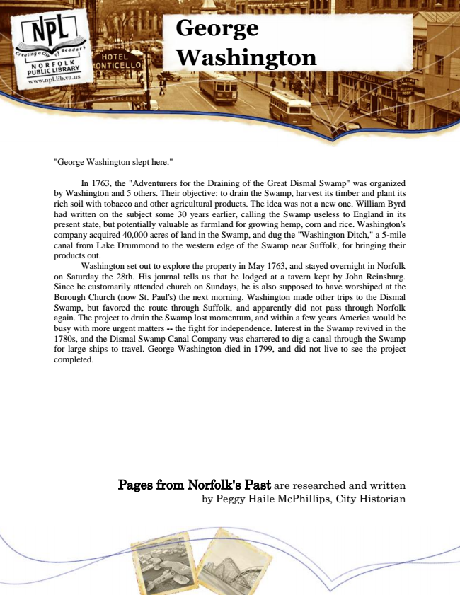

George Washington
"George Washington slept here."
In 1763, the "Adventurers for the Draining of the Great Dismal Swamp" was organized by Washington and 5 others. Their objective: to drain the Swamp, harvest its timber and plant its rich soil with tobacco and other agricultural products. The idea was not a new one. William Byrd had written on the subject some 30 years earlier, calling the Swamp useless to England in its present state, but potentially valuable as farmland for growing hemp, corn and rice. Washington's company acquired 40,000 acres of land in the Swamp, and dug the "Washington Ditch," a 5-mile canal from Lake Drummond to the western edge of the Swamp near Suffolk, for bringing their products out.
Washington set out to explore the property in May 1763, and stayed overnight in Norfolk on Saturday the 28th. His journal tells us that he lodged at a tavern kept by John Reinsburg. Since he customarily attended church on Sundays, he is also supposed to have worshiped at the Borough Church (now St. Paul's) the next morning. Washington made other trips to the Dismal Swamp, but favored the route through Suffolk, and apparently did not pass through Norfolk again. The project to drain the Swamp lost momentum, and within a few years America would be busy with more urgent matters -- the fight for independence. Interest in the Swamp revived in the 1780s, and the Dismal Swamp Canal Company was chartered to dig a canal through the Swamp for large ships to travel. George Washington died in 1799, and did not live to see the project completed.
Pages from Norfolk's Past are researched and written by Peggy Haile McPhillips, City Historian